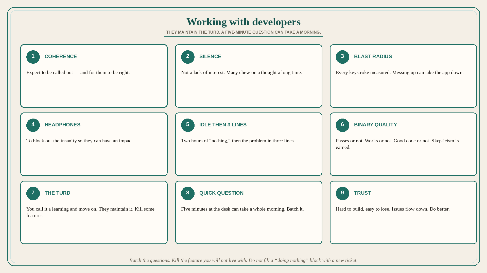

Working with developers: they maintain the turd; five-minute questions take a morning
Source: John Cutler (@johncutlefish)
original post
What it claims
Tips for PdM working with software developers. (1) They are masters of coherence in arguments, information, and statements. Expect to be called out (bluntly) on something — and for them to be right. (2) Do not assume silence means a lack of interest. Introverts get chased out of the “business world”; in software-dev teams extroverts and introverts thrive. Many chew on a thought for a long time before interjecting. (3) Imagine a world where your every keystroke is measured, scrutinized, Jira-ed, and reviewed — and messing up means the whole app can go down (or worse). Compare that to the PM world, where you can often dismiss something with a hand-wavy “that’s a learning!” (4) They care about impact, but they are busy. Do not assume all they want is headphones and a custom keyboard; they do that to block out the insanity so they can have an impact. (5) Some of Cutler’s best dev friends will sit doing “nothing” for two hours, take a break, play ping-pong, have coffee — then solve the problem in two seconds with three lines of code. Try it when you do not have back-to-back meetings. (6) The test passes or it does not. It works or it does not. It is good code or shitty code. Compare that to wishy-washy strategy and “I’ll know it when I see it.” Some skepticism is to be expected. (7) Nothing sucks more than working for six months on something and seeing it fail (even if the org’s success theater says otherwise). You get to move on. They need to maintain the turd. Reflect on that. Kill some features. (8) An engineer had a rear-view mirror to see Cutler approaching with a “quick question,” then instantly put on headphones (the sign for not now). Five-minute “quick questions” can take up a whole morning. (9) Trust is hard to build and easy to lose. Issues tend to flow down, and developers need to clean up the mess. Cut them some slack if they are a bit grumpy. Do better. They will come around.
Why it matters for a PO
The backlog-secretary version of the role interrupts with “quick questions,” treats silence as disengagement, waves failed bets as “a learning,” and leaves eng to maintain the turd. Cutler’s nine are trio hygiene: coherence, wait for the thought, respect the blast radius, protect focus, allow idle-then-three-lines, expect binary quality, kill features you will not live with, batch the questions, own the mess that flows down.
3 takeaways
- Silence is not disinterest; blunt coherence is often right; headphones are for impact, not withdrawal.
- You can call a miss “a learning” and move on; they maintain the failed feature — kill some.
- A five-minute “quick question” can take a morning; issues flow down — do better, then trust can return.
Practice this week
Batch questions into one scheduled slot instead of desk drive-bys. Kill or schedule deprecation for one shipped item the team is still maintaining that the org already called a learning. Do not fill a developer’s “doing nothing” block with a new ticket.